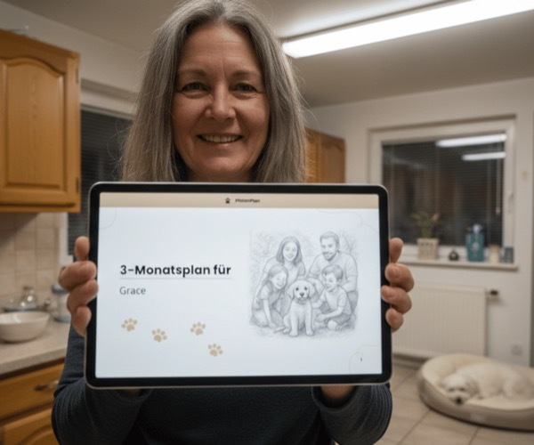

Ich habe 3 Monate jede Hundetraining-Methode getestet — hier ist was wirklich funktioniert
Nach Jahren erfolgloser Tipps aus YouTube-Videos und Ratgeber-Büchern dachte ich, ich hätte schon alles probiert. Bis ich verstand, dass es nie an der Methode lag — sondern an der Struktur dahinter.
Ich erinnere mich noch an den Moment, als ich verstanden habe, dass ich Luna den Spaziergang nicht mehr zumuten konnte. Es war ein regnerischer Dienstag im März. Ich stand vor einem Supermarkt, versuchte meine Einkäufe zu halten, während Luna an der Leine zog wie ein Eiswagen-Pony. Eine ältere Dame schaute mich mitleidig an. Ich lächelte gequält zurück.
Zu dem Zeitpunkt hatte ich bereits drei Hundetrainer-Sessions für je €80 bezahlt. Ich hatte YouTube-Kurse geguckt. Zwei Bücher gelesen. Mein Schlafzimmer war voll mit ausgedruckten "7-Tage-Plänen" von Blogs, die alle nicht funktionierten. Wenn überhaupt, wurde es schlimmer: Luna war gestresst, ich war frustriert, und unsere Spaziergänge waren zu einer täglichen Belastung geworden.

Die schmerzhafte Wahrheit die niemand gerne hört
Was ich bei meiner Recherche fand, hat mich anfangs geärgert, dann aber aufgeweckt: Die meisten Hundeeltern scheitern nicht am Hund. Sie scheitern daran, dass sie isolierte Tipps auf einen lebenden Hund anwenden — statt einem strukturierten Plan zu folgen.
Ein Trainer zeigt dir, wie du einen Klicker benutzt. Ein YouTuber erklärt die Hand-Signal-Methode. Der Nachbar schwört auf Leckerli-Timing. Alles isolierte Puzzle-Teile, die ohne das Gesamtbild nicht zusammenpassen.
Der Moment, in dem es Klick machte
Im Oktober 2025 stieß ich auf Pfoten-Plan — zunächst skeptisch, weil ich schon so viel ausprobiert hatte. Was mich aber neugierig machte, war der Ansatz: Statt eines Standard-PDFs bekommst du einen Plan, der auf deinen Hund zugeschnitten ist. Rasse, Alter, Problem, Aktivitätslevel — alles fließt ein.
Ich füllte den Fragebogen aus (fünf Minuten, inklusive Details über Lunas Temperament und mein schlechtes Gewissen, dass ich sie nicht im Griff hatte). Sekunden später lag der Plan in meinem Postfach.
Was anders war — ehrlich gesagt
Ich will hier nichts beschönigen. Es gibt massig PDF-Pläne im Internet, die aussehen wie eine gedruckte Excel-Tabelle. Pfoten-Plan war anders aufgebaut. Drei Dinge fielen mir sofort auf:
- Der Plan begann mit einer Diagnose, nicht mit Übungen. Warum zog Luna überhaupt? Aufregung? Unsicherheit? Fehlende Bindung? Die Analyse war erstaunlich präzise.
- Jede Woche baute auf der vorigen auf. Keine zufälligen Übungsblöcke — sondern ein aufeinander abgestimmter Rhythmus mit steigender Komplexität.
- Es gab konkrete Zeitfenster. "Montag 10 Minuten, Dienstag 15, Donnerstag Stabilisierungsübung." Nicht "üb ein bisschen" — sondern ein nachvollziehbarer Fahrplan.
Ehrlich gesagt: Genau das hatte mir bei allem anderen gefehlt.
Tag 1 bis Tag 14: Was wirklich passierte
Ich bin skeptisch — das sollte klar sein. Also führte ich ein Tagebuch. Hier die ehrliche Kurzversion:
Tag 1-3: Fühlt sich unspektakulär an. Kleine Basis-Übungen, die ich erst für zu simpel hielt. Fehler. Die Einfachheit war der Trick — Luna sollte erst zur Ruhe kommen.
Tag 4-7: Die erste Überraschung. Luna blieb beim Gassigehen stehen, wenn ich stehen blieb. Klein, aber neu. Zum ersten Mal seit Monaten.
Tag 8-12: Die Spannung an der Leine nahm spürbar ab. Keine Perfektion, aber deutlich weniger Ziehen. Nachbarn bemerkten es.
Tag 13-14: Unser erster "normaler" Spaziergang seit ich sie hatte. Kein Ziehen. Kein Gezerre an Laternen. Sie blieb bei mir.
Die Sache mit den Kosten
Hier werden die Zahlen interessant. Lass mich einmal aufrechnen, was ich in den letzten 18 Monaten ausgegeben hatte:
- Drei Hundetrainer-Einzelsitzungen: €240
- Zwei Ratgeber-Bücher: €38
- Online-Videokurs: €149
- Diverse "Anti-Zieh-Geschirre": €92
Gesamt: €519 — ohne Erfolg.
Pfoten-Plan kostete ab €29,99 einmalig. Ein Bruchteil dessen, was ich schon ausgegeben hatte, für etwas, das tatsächlich funktionierte. Das hat mich ehrlich gesagt wütend gemacht — nicht auf Pfoten-Plan, sondern auf mich selbst, dass ich so viel Zeit und Geld verloren hatte, bevor ich auf etwas so Simples stieß.
Was nicht funktioniert (ehrliche Einordnung)
Damit das hier keine Werbung wird — was mir weniger gefällt:
- Es ist kein Abo. Was ich gut finde — aber wer "Support on demand" will, sollte das vorher wissen. Die Methode trägt sich selbst durch die strukturierten Anleitungen.
- Du musst es tatsächlich machen. Klingt banal, aber ich habe den Plan 3 Tage nach Erhalt erstmal zur Seite gelegt. Er wartet auf dich. Er macht das Training nicht für dich.
- Nicht für jedes Problem gleich schnell. Leinenziehen: spürbar in 2 Wochen. Tief verwurzelte Aggression: realistischer 6-8 Wochen. Die Ergebnisse sind ehrlich kommuniziert.
Meine ehrliche Empfehlung
Wenn du dich in meiner Geschichte wiedererkennst — wenn du schon drei, vier, fünf Methoden ausprobiert hast und frustriert bist, dass es immer nur kurz hilft und dann wieder bergab geht — dann liegt das Problem fast nie am Hund. Es liegt an der Struktur, in der du trainierst.
Pfoten-Plan ist keine Magie. Es ist ein strukturiertes Programm, das aufgibt, was bei DIESEM Hund mit DIESEM Problem zu DIESER Tageszeit zu tun ist. Für mich war das die Wende.
Willst du wissen, wie dein persönlicher Plan aussehen würde?
Der Fragebogen dauert fünf Minuten. Der Plan liegt danach in deinem Postfach.
Meinen Plan ansehen →Häufige Fragen die ich bekam
Funktioniert das auch bei älteren Hunden? Laut Pfoten-Plan: ja, bis in hohe Alter. Die Methoden sind auf Sanftheit ausgelegt, kein drill-sergeant-style.
Was wenn es nicht klappt? 30 Tage Geld-zurück-Garantie. Ich hatte sie nicht genutzt — aber beruhigend zu wissen.
Ist das ein Abo? Nein. Einmalzahlung, lebenslanger Zugang zu deinem Plan.
Was wenn mein Hund mehrere Probleme hat? Der Plan ist auf Prioritäten ausgelegt. Bei Luna starteten wir mit Leinenziehen, später kamen Bellen-Themen dazu — alles im selben Zugang enthalten.
Dieser Artikel ist eine unabhängige Analyse der Redaktion des Hunde-Reports. Sarah Klein ist freie Autorin und Hundeeltern in Hannover. Sie teilt ihre Erfahrungen ohne Anspruch auf allgemeine Gültigkeit — jeder Hund ist anders.
Deine Analyse wartet noch auf dich.
Du hast den Fragebogen bereits begonnen. In weniger als fünf Minuten erhältst du deinen persönlichen Trainingsplan — basierend auf deinen Antworten.
Plan für meinen Hund erstellen →